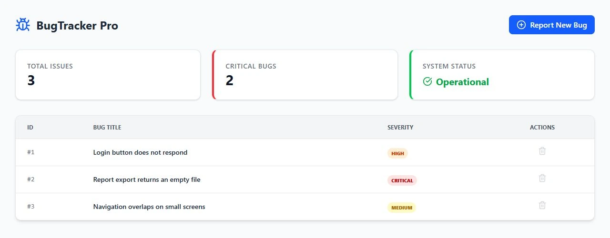
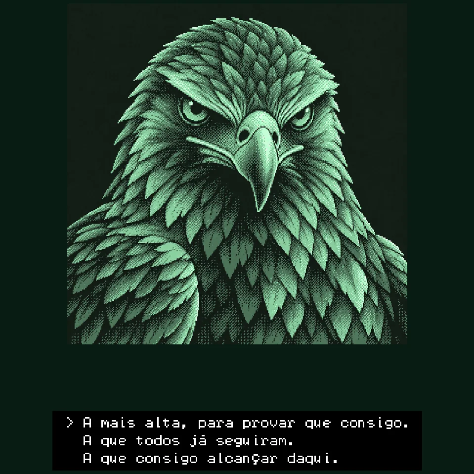

ProjetosProjects
Tudo o que eu já construí.Everything I've built so far.
Por enquanto são quatro, mas a ideia é essa lista crescer. Procura por palavra ou filtra por área.There are four for now, but the plan is for this list to grow. Search by keyword or filter by area.
-
 Projetos I · CESAR School · 2026Projects I · CESAR School · 2026
Bússola de Fluxo Urbano
Uma bússola de verdade, só que de gente: aponta por qual de três caminhos está passando mais gente.A real compass, but for people: it points to which of three paths has the most foot traffic.
Projetos I · CESAR School · 2026Projects I · CESAR School · 2026
Bússola de Fluxo Urbano
Uma bússola de verdade, só que de gente: aponta por qual de três caminhos está passando mais gente.A real compass, but for people: it points to which of three paths has the most foot traffic.
-
 Fundamentos de Programação · CESAR School · 2026Programming Fundamentals · CESAR School · 2026
SentinelaLog
Fica de olho em quem entra num laboratório fictício e nunca dá um alerta sem explicar o porquê.Keeps an eye on who enters a fictional lab and never raises an alert without explaining why.
Fundamentos de Programação · CESAR School · 2026Programming Fundamentals · CESAR School · 2026
SentinelaLog
Fica de olho em quem entra num laboratório fictício e nunca dá um alerta sem explicar o porquê.Keeps an eye on who enters a fictional lab and never raises an alert without explaining why.
-

Projeto pessoalPersonal project Bug Tracker Pro Um caderninho de bugs com prioridade. Sim, ele também teve os dele.A little bug notebook with priorities. Yes, it had bugs of its own. -

Meu jogo · em desenvolvimentoMy game · in development The Song Of Amergin Uma aventura curtinha, sem combate, que roda no navegador. Só história e atmosfera.A short adventure with no combat that runs in the browser. Just story and atmosphere.
Nada por aqui com essa palavra. Tenta outra?Nothing here with that word. Try another one?